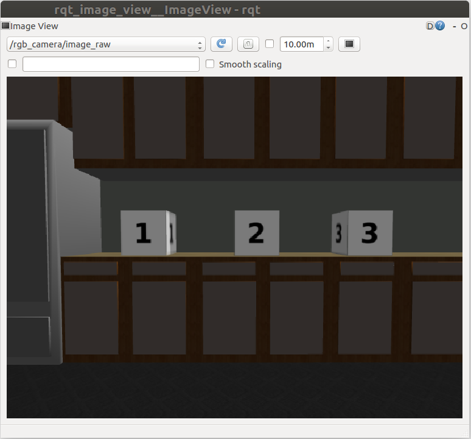

Overview
Here, we'll write nodes in C++. The first node that we'll write is called simple_mover. The simple_mover node does nothing more than publish joint angle commands to simple_arm.
Then, we'll write another node called arm_mover. The arm_mover node provides a service called safe_move, which allows the arm to be moved to any position within its workspace that has been deemed safe. The safe zone is bounded by minimum and maximum joint angles, and is configurable via the ROS parameter server.
The last node we'll write is the look_away node. This node subscribes to the arm joint positions and a topic where camera data is being published. When the camera detects an image with uniform color, meaning that it’s looking at the sky, and the arm is not moving, the node will call the safe_move service via a client to move the arm to a new position.
ROS Publishers
Before we write the code for simple_mover, it may be helpful to see how ROS Publishers work in C++.
Publishers allow a node to send messages to a topic, so that data from the node can be used in other parts of ROS. In C++, ROS publishers typically have the following definition format, although other parameters and arguments are possible:
ros::Publisher pub1 = n.advertise<message_type>("/topic_name", queue_size);
The pub1 object is a publisher object instantiated from the ros::Publisher class. This object allows you to publish messages by calling the publish() function.
To communicate with ROS master in C++, you need a NodeHandle. The node handle n will fully initialize the node.
The advertise() function is used to communicate with ROS and inform that you want to publish a message on a given topic name. The "/topic_name" indicates which topic the publisher will be publishing to.
The message_type is the type of message being published on "/topic_name". For example, the string message data type in ROS is std_msgs::String.
The queue_size indicates the number of messages that can be stored in a queue. A publisher can store messages in a queue until the messages can be sent. If the number of messages stored exceeds the size of the queue, the oldest messages are dropped.
Once the publisher object pub1 has been created, as above, a message with the specified data type can be published as follows:
pub1.publish(msg);
For more information about C++ ROS publishers, see the documentation here.
Quiz! Assume that a queued message is typically picked up in an average time of 1/10th of a second with a standard deviation of 1/20th of a second, and your publisher is publishing at a frequency of 10Hz. Of the options below, which would be the best setting for queue_size?
Answer! Choosing a good queue_size is somewhat subjective, but since messages are picked up at roughly the same rate that they are published, a queue_size of 2 provides a little room for messages to queue without being too large.
Simple Mover
You will now go through the process of implementing your first ROS node in C++. This node is called simple_mover. As its name implies, this node only has one responsibility,and that is to command joint movements for simple_arm.
Goal
The goal of the simple_mover node is to command each joint in the simple arm and make it swing between -pi/2 to pi/2 over time. Here’s a demonstration of this node in action in this video.
Topics
To do so, it must publish joint angle command messages to the following topics:
| Topic Name | /simple_arm/joint_1_position_controller/command |
| Message Type | std_msgs/Float64 |
| Description | Commands joint 1 to move counter-clockwise, units in radians |
| Topic Name | /simple_arm/joint_2_position_controller/command |
| Message Type | std_msgs/Float64 |
| Description | Commands joint 2 to move counter-clockwise, units in radians |
NOTE: If you no longer have the catkin_ws or simple_arm package from the previous lesson, you need to re-create a new catkin_ws and clone the package inside your /home/workspace/catkin_ws/src with:
$ mkdir -p /home/workspace/catkin_ws/src/ $ cd /home/workspace/catkin_ws/src/ $ git clone -b first_interaction https://github.com/udacity/RoboND-simple_arm/ simple_arm
Adding the source directory
In order to create a new node in C++, you must first create the src directory within the simple_arm package as it does not yet exist.
$ cd /home/workspace/catkin_ws/src/simple_arm/ $ mkdir src
Creating a new script
Once the source directory has been created, C++ scripts can be added to the package. Now, create the simple_mover C++ script inside the source directory of the package.
$ cd /home/workspace/catkin_ws/src/simple_arm/src/ $ touch simple_mover.cpp
The code
Below is the complete code for the simple_mover C++ node, with line-by-line comments embedded. You can copy and paste this code into the simple_mover script you created in /home/workspace/catkin_ws/src/simple_arm/src/ directory like this:
First, open a new terminal. Then:
$ cd /home/workspace/catkin_ws/src/simple_arm/src/
$ gedit simple_mover.cpp
Below is the code for simple_mover:
#include "ros/ros.h" #include "std_msgs/Float64.h" int main(int argc, char** argv) { // Initialize the arm_mover node ros::init(argc, argv, "arm_mover"); // Create a handle to the arm_mover node ros::NodeHandle n; // Create a publisher that can publish a std_msgs::Float64 message on the /simple_arm/joint_1_position_controller/command topic ros::Publisher joint1_pub = n.advertise<std_msgs::Float64>("/simple_arm/joint_1_position_controller/command", 10); // Create a publisher that can publish a std_msgs::Float64 message on the /simple_arm/joint_2_position_controller/command topic ros::Publisher joint2_pub = n.advertise<std_msgs::Float64>("/simple_arm/joint_2_position_controller/command", 10); // Set loop frequency of 10Hz ros::Rate loop_rate(10); int start_time, elapsed; // Get ROS start time while (not start_time) { start_time = ros::Time::now().toSec(); } while (ros::ok()) { // Get ROS elapsed time elapsed = ros::Time::now().toSec() - start_time; // Set the arm joint angles std_msgs::Float64 joint1_angle, joint2_angle; joint1_angle.data = sin(2 * M_PI * 0.1 * elapsed) * (M_PI / 2); joint2_angle.data = sin(2 * M_PI * 0.1 * elapsed) * (M_PI / 2); // Publish the arm joint angles joint1_pub.publish(joint1_angle); joint2_pub.publish(joint2_angle); // Sleep for the time remaining until 10 Hz is reached loop_rate.sleep(); } return 0; }
See the video here
The code: Explained
#include "ros/ros.h"
ros is the official client library for ROS. It provides most of the fundamental functionality required for interfacing with ROS via C++. It has tools for creating Nodes and interfacing with Topics, Services, and Parameters.
#include "std_msgs/Float64.h"
From the std_msgs package, the Float64 header file is imported. The std_msgs package also contains the primitive message types in ROS. Later, you will be publish Float64 messages to the position command topics for each joint.
ros::init(argc, argv, "arm_mover");
A ROS node is initialized with the init() function and registered with the ROS Master. Here arm_mover is the name of the node. Notice that the main function takes both argc and argv arguments and passes them to the init() function.
ros::NodeHandle n;
A node handle object n is instantiated from the NodeHandle class. This node handle object will fully initialize the node and permits it to communicate with the ROS Master.
ros::Publisher joint1_pub = n.advertise<std_msgs::Float64>("/simple_arm/joint_1_position_controller/command", 10); ros::Publisher joint2_pub = n.advertise<std_msgs::Float64>("/simple_arm/joint_2_position_controller/command", 10);
Two publishers are declared, one for joint 1 commands, and one for joint 2 commands. The node handle will tell the ROS master that a Float64 message will be published on the joint topic. The node handle also sets the queue size to 10 in the second argument of the advertise function.
ros::Rate loop_rate(10);
A frequency of 10HZ is set using the loop_rate object. Rates are used in ROS to limit the frequency at which certain loops cycle. Choosing a rate that is too high may result in unnecessary CPU usage, while choosing a value too low could result in high latency. Choosing sensible values for all of the nodes in a ROS system is a bit of a fine art.
start_time = ros::Time::now().toSec();
We set start_time to the current time. In a moment we will use this to determine how much time has elapsed. When using ROS with simulated time (as we are doing here), ros-Time-now will initially return 0, until the first message has been received on the /clock topic. This is why start_time is set and polled continuously until a nonzero value is returned.
elapsed = ros::Time::now().toSec() - start_time;
In the main loop, the elapsed time is evaluated by measuring the current time and subtracting the start time.
std_msgs::Float64 joint1_angle, joint2_angle; joint1_angle.data = sin(2 * M_PI * 0.1 * elapsed) * (M_PI / 2); joint2_angle.data = sin(2 * M_PI * 0.1 * elapsed) * (M_PI / 2);
The joint angles are sampled from a sine wave with a period of 10 seconds, and in magnitude from [-pi/2, +pi/2].
joint1_pub.publish(joint1_angle); joint2_pub.publish(joint2_angle);
Each trip through the body of the loop will result in two joint command messages being published.
loop_rate.sleep();
Due to the call to loop_rate.sleep(), the loop is traversed at approximately 10 Hertz. When the node receives the signal to shut down (either from the ROS Master, or via a signal from a console window), the loop will exit.
Build and Run
Before you can run the simple_mover node, you have to compile the C++ script.
Modifying CMakeLists.txt
In order for catkin to generate the C++ libraries, you must first modify simple_arm’s CMakeLists.txt.
CMake is the build tool underlying catkin, and CMakeLists.txt is a CMake script used by catkin. If you’re familiar with the concept of makefiles, this is similar.
Navigate to the package CMakeLists.txt file and open it:
$ cd /home/workspace/catkin_ws/src/simple_arm/
$ gedit CMakeLists.txt
First, ensure that the find_package() macro lists std_msgs, message_generation, and controller_manager as required packages. The find_package() macro should look as follows:
find_package(catkin REQUIRED COMPONENTS std_msgs message_generation controller_manager )
As the names might imply, the std_msgs package contains all of the basic message types, and message_generation is required to generate message libraries for all the supported languages (cpp, lisp, python, javascript). The contoller_manager is another package responsible for controlling the arm.
Now, add the following block of code at the bottom of the file:
include_directories(include ${catkin_INCLUDE_DIRS}) add_executable(simple_mover src/simple_mover.cpp) target_link_libraries(simple_mover ${catkin_LIBRARIES}) add_dependencies(simple_mover simple_arm_generate_messages_cpp)
These instructions ask the compiler to include the directories, executable file, link libraries, and dependencies for your C++ code:
add_executable(node_name sourcecode_directory)
Creates the executable simple_mover file.
target_link_libraries(node_name ${catkin_LIBRARIES})
This will add all the linked libraries to the compiler.
add_dependencies(node_name package_name_generate_messages_cpp)
Generates message headers for this package before you can use them.
Keep in mind that you should always include these instructions whenever you want to write a C++ ROS node. For more information about CMakeLists.txt check out the CMakeLists.txt page on the ROS wiki.
Building the Package
Now that you have included specific instructions for your compiler, let’s build the package:
$ cd /home/workspace/catkin_ws/
$ catkin_make
Running simple_mover
Assuming that your workspace has recently been built, you can launch simple_arm as follows:
$ cd /home/workspace/catkin_ws/ $ source devel/setup.bash $ roslaunch simple_arm robot_spawn.launch
Once the ROS Master, Gazebo, and all of our relevant nodes are up and running, we can finally launch simple_mover. To do so, open a new terminal and type the following commands:
$ cd /home/workspace/catkin_ws/ $ source devel/setup.bash $ rosrun simple_arm simple_mover
You can always download a copy of this branch here.
ROS Services
Now that you've written your first ROS node, you've seen how publishing to a topic works, and you were able to control the robotic arm by publishing to the /simple_arm/joint_1_position_controller/command topic and /simple_arm/joint_2_position_controller/command topic. Next, we'll see another node called arm_mover, which implements the safe_move service to allow service calls to control the arm.
Defining services
A ROS service allows request/response communication to exist between nodes. Within the node providing the service, request messages are handled by functions or methods. Once the requests have been handled successfully, the node providing the service sends a message back to the requester node. In C++, a ROS service server can be created using the following definition format:
ros::ServiceServer service = n.advertiseService(`service_name`, handler);
In ROS, the service class name ServiceServer comes from the file name where the service definition exists. Each service provides a definition in a .srv file; this is a text file that provides the proper message type for both requests and responses.
The advertiseService() allows you to communicate with ROS through the node handle n and inform ROS that you want to create a service.
The service_name is the name given to the service. Other nodes will use this name to specify the service to which they are sending requests.
The handler is the name of the function or method that handles the incoming service message. This function is called each time the service is called, and the message from the service call is passed to the handler function as an argument. The handler should return an appropriate service response message.
Using Services
Command Line
Services can be called directly from the command line, with:
$ rosservice call service_name “request”
After calling the service, you will wait for an answer.
ROS Service Client
Another approach is to use a ROS service programmatically, from within a node. You will define a ROS client, which provides the interface for sending messages to the service:
ros::ServiceClient client = n.serviceClient<package_name::service_file_name>("service_name");
One way the ROS Client can then be used is to send requests is as follows:
client.call(srv); // request a service
For now, we’ll focus on how to create the ROS service server. Later, in the look_away node, we will practice calling the service from a service client node.
See the ROS documentation on services for detailed instructions on how to create and call ROS services.

Arm Mover
But before we rush off, we have more ground to cover:
- Custom message generation
- Services
- Parameters
- Launch Files
In order to gain an understanding of the above, we will write another node called arm_mover.
Description of Arm Mover
In many respects, arm_mover is quite similar to simple_mover. Like simple_mover, it is responsible for commanding the arm to move. However, instead of simply commanding the arm to follow a predetermined trajectory, the arm_mover node provides the service safe_move, which allows other nodes in the system to send movement_commands.
In addition to allowing movements via a service interface, arm_mover also allows for configurable minimum and maximum joint angles, by using parameters.
Creating a new service definition
An interaction with a service consists of two messages. A node passes a request message to the service, and the service returns a response message to the node. The definitions of the request and response message types are contained within .srv files living in the srv directory under the package’s root.
Let’s define a new service for simple_arm. We shall call it GoToPosition.
$ cd /home/workspace/catkin_ws/src/simple_arm/ $ mkdir srv $ cd srv $ gedit GoToPosition.srv
You should now edit GoToPosition.srv with gedit, so it contains the following:
float64 joint_1 float64 joint_2 --- string msg_feedback
Service definitions always contain two sections, separated by a ‘---’ line. The first section is the definition of the request message. Here, a request consists of two float64 fields, one for each of simple_arm’s joints. The second section contains the service response. The response contains only a single field, msg_feedback. The msg_feedback field is of type string, and is responsible for indicating that the arm has moved to a new position.
NOTE: Defining a custom message type is very similar. The only differences is that message definitions live within the msg directory of the package root, have a .msg extension, and do not contain the --- section divider. You can find more detailed information on creating messages and services on the ROS wiki.
Modifying CMakeLists.txt
As a reminder, in order for catkin to generate the C++ libraries which allow you to utilize messages in your code you must modify simple_arm’s CMakeLists.txt file. You can find this file in /home/workspace/catkin_ws/src/simple_arm/.
First, uncomment the add_service_files() macro so it looks like this:
add_service_files( FILES GoToPosition.srv )
This tells catkin to add the newly created service file.
Then, make sure that the generate_messages() macro is uncommented:
generate_messages( DEPENDENCIES std_msgs # Or other packages containing msgs )
This macro is actually responsible for generating the code.
To force ROS to compile your C++ code with C++ 11 include this line of code:
add_compile_options(-std=c++11)
Modifying package.xml
Now that you have updated the CMakeLists.txt file, there’s one more file which needs to be modified: package.xml.
package.xml is responsible for defining many of the package’s properties, such as the name of the package, version numbers, authors, maintainers, and dependencies.
Right now, we’ll focus on the dependencies. We already learned about build-time dependencies and run-time package dependencies. When rosdep is searching for these dependencies, it’s the package.xml file that is being parsed. So we should make sure that the message_generation build dependency and the message_runtime run dependency exist in package.xml.
<buildtool_depend>catkin</buildtool_depend> <build_depend>message_generation</build_depend> <run_depend>controller_manager</run_depend> <run_depend>effort_controllers</run_depend> <run_depend>gazebo_plugins</run_depend> <run_depend>gazebo_ros</run_depend> <run_depend>gazebo_ros_control</run_depend> <run_depend>joint_state_controller</run_depend> <run_depend>joint_state_publisher</run_depend> <run_depend>robot_state_publisher</run_depend> <run_depend>message_runtime</run_depend> <run_depend>xacro</run_depend>
For more information about package.xml, check out the ROS Wiki.
Checking Service with ROS
Now that you’ve created your GoToPosition service file, let's make sure that ROS can see it using the rossrv show command:
$ cd /home/workspace/catkin_ws/ $ source devel/setup.bash $ rossrv show GoToPosition
We will see:
[simple_arm/GoToPosition]: float64 joint_1 float64 joint_2 --- string msg_feedback
This indicates that ROS can see your service.
Arm Mover: The Code
Creating the empty arm_mover node script
The steps that we should take to create the arm_mover node are exactly the same as the steps we took to create the simple_mover node, except the actual name of the node itself.
Open a new terminal, and type the following:
$ cd /home/workspace/catkin_ws/src/simple_arm/src/
$ gedit arm_mover.cpp
Now copy and paste the code below into the source code and save the file.
arm_mover.cpp
#include "ros/ros.h" #include "simple_arm/GoToPosition.h" #include <std_msgs/Float64.h> // Global joint publisher variables ros::Publisher joint1_pub, joint2_pub; // This function checks and clamps the joint angles to a safe zone std::vector<float> clamp_at_boundaries(float requested_j1, float requested_j2) { // Define clamped joint angles and assign them to the requested ones float clamped_j1 = requested_j1; float clamped_j2 = requested_j2; // Get min and max joint parameters, and assigning them to their respective variables float min_j1, max_j1, min_j2, max_j2; // Assign a new node handle since we have no access to the main one ros::NodeHandle n2; // Get node name std::string node_name = ros::this_node::getName(); // Get joints min and max parameters n2.getParam(node_name + "/min_joint_1_angle", min_j1); n2.getParam(node_name + "/max_joint_1_angle", max_j1); n2.getParam(node_name + "/min_joint_2_angle", min_j2); n2.getParam(node_name + "/max_joint_2_angle", max_j2); // Check if joint 1 falls in the safe zone, otherwise clamp it if (requested_j1 < min_j1 || requested_j1 > max_j1) { clamped_j1 = std::min(std::max(requested_j1, min_j1), max_j1); ROS_WARN("j1 is out of bounds, valid range (%1.2f,%1.2f), clamping to: %1.2f", min_j1, max_j1, clamped_j1); } // Check if joint 2 falls in the safe zone, otherwise clamp it if (requested_j2 < min_j2 || requested_j2 > max_j2) { clamped_j2 = std::min(std::max(requested_j2, min_j2), max_j2); ROS_WARN("j2 is out of bounds, valid range (%1.2f,%1.2f), clamping to: %1.2f", min_j2, max_j2, clamped_j2); } // Store clamped joint angles in a clamped_data vector std::vector<float> clamped_data = { clamped_j1, clamped_j2 }; return clamped_data; } // This callback function executes whenever a safe_move service is requested bool handle_safe_move_request(simple_arm::GoToPosition::Request& req, simple_arm::GoToPosition::Response& res) { ROS_INFO("GoToPositionRequest received - j1:%1.2f, j2:%1.2f", (float)req.joint_1, (float)req.joint_2); // Check if requested joint angles are in the safe zone, otherwise clamp them std::vector<float> joints_angles = clamp_at_boundaries(req.joint_1, req.joint_2); // Publish clamped joint angles to the arm std_msgs::Float64 joint1_angle, joint2_angle; joint1_angle.data = joints_angles[0]; joint2_angle.data = joints_angles[1]; joint1_pub.publish(joint1_angle); joint2_pub.publish(joint2_angle); // Wait 3 seconds for arm to settle ros::Duration(3).sleep(); // Return a response message res.msg_feedback = "Joint angles set - j1: " + std::to_string(joints_angles[0]) + " , j2: " + std::to_string(joints_angles[1]); ROS_INFO_STREAM(res.msg_feedback); return true; } int main(int argc, char** argv) { // Initialize the arm_mover node and create a handle to it ros::init(argc, argv, "arm_mover"); ros::NodeHandle n; // Define two publishers to publish std_msgs::Float64 messages on joints respective topics joint1_pub = n.advertise<std_msgs::Float64>("/simple_arm/joint_1_position_controller/command", 10); joint2_pub = n.advertise<std_msgs::Float64>("/simple_arm/joint_2_position_controller/command", 10); // Define a safe_move service with a handle_safe_move_request callback function ros::ServiceServer service = n.advertiseService("/arm_mover/safe_move", handle_safe_move_request); ROS_INFO("Ready to send joint commands"); // Handle ROS communication events ros::spin(); return 0; }
See the video here.
The code: Explained
#include "ros/ros.h" #include "simple_arm/GoToPosition.h" #include <std_msgs/Float64.h>
The included modules for arm_mover are the same as simple_arm, with the exception of one new file. Namely, the GoToPosition.h header file, which is the header file generated from the GoToPosition.srv file we created earlier.
ros::init(argc, argv, "arm_mover"); ros::NodeHandle n;
Inside the C++ main function, the arm_mover node is initialized and a ROS NodeHandle object n is instantiated to communicate with ROS.
joint1_pub = n.advertise<std_msgs::Float64>("/simple_arm/joint_1_position_controller/command", 10); joint2_pub = n.advertise<std_msgs::Float64>("/simple_arm/joint_2_position_controller/command", 10);
As we did earlier in the simple_arm node, two publisher objects are created to publish joint angles to the arm. These objects are defined globally so as to be easily accessible from all the other functions.
ros::ServiceServer service = n.advertiseService("/arm_mover/safe_move", handle_safe_move_request);
Next, the GoToPosition service is created with the node name followed by safe_move. Generally, you want to name your services with the node name first to easily find them in large projects. This service is defined with a handle_safe_move_request callback function. The callback function runs when a service request is received.
ros::spin();
The ros::spin() function simply blocks until a shutdown request is received by the node.
bool handle_safe_move_request(simple_arm::GoToPosition::Request& req, simple_arm::GoToPosition::Response& res)
When a client sends a GoToPosition request to the safe_move service, either from the terminal or from a separate node the handle_safe_move_request function is called. The function parameter req is of type GoToPosition::Request. And the service response parameter res is of type GoToPosition::Response.
std::vector<float> joints_angles = clamp_at_boundaries(req.joint_1, req.joint_2);
This function passes the requested angles to the clamp_at_boundaries() function.
std::vector<float> clamp_at_boundaries(float requested_j1, float requested_j2) { // Define clamped joint angles and assign them to the requested ones float clamped_j1 = requested_j1; float clamped_j2 = requested_j2; // Get min and max joint parameters, and assign them to their respective variables float min_j1, max_j1, min_j2, max_j2; // Assign a new node handle since we have no access to the main one ros::NodeHandle n2; // Get node name std::string node_name = ros::this_node::getName(); // Get joints min and max parameters n2.getParam(node_name + "/min_joint_1_angle", min_j1); n2.getParam(node_name + "/max_joint_1_angle", max_j1); n2.getParam(node_name + "/min_joint_2_angle", min_j2); n2.getParam(node_name + "/max_joint_2_angle", max_j2); // Check if joint 1 falls in the safe zone, otherwise clamp it if (requested_j1 < min_j1 || requested_j1 > max_j1) { clamped_j1 = std::min(std::max(requested_j1, min_j1), max_j1); ROS_WARN("j1 is out of bounds, valid range (%1.2f,%1.2f), clamping to: %1.2f", min_j1, max_j1, clamped_j1); } // Check if joint 2 falls in the safe zone, otherwise clamp it if (requested_j2 < min_j2 || requested_j2 > max_j2) { clamped_j2 = std::min(std::max(requested_j2, min_j2), max_j2); ROS_WARN("j2 is out of bounds, valid range (%1.2f,%1.2f), clamping to: %1.2f", min_j2, max_j2, clamped_j2); } // Store clamped joint angles in a clamped_data vector std::vector<float> clamped_data = { clamped_j1, clamped_j2 }; return clamped_data; }
The clamp_at_boundaries() function is responsible for enforcing the minimum and maximum joint angles for each joint. If the joint angles passed in are outside of the operable range, they will be “clamped” to the nearest allowable value. The minimum and maximum joint angles are retrieved from the parameter server each time clamp_at_boundaries is called. The rest of this function simply clamps the joint angle if necessary. Warning messages are logged if the requested joint angles are out of bounds.
std_msgs::Float64 joint1_angle, joint2_angle; joint1_angle.data = joints_angles[0]; joint2_angle.data = joints_angles[1]; joint1_pub.publish(joint1_angle); joint2_pub.publish(joint2_angle);
Then, the handle_safe_move_request() function publishes the clamped joint angles to the arm.
ros::Duration(3).sleep();
The safe_move service will be blocked for 3 seconds so the arm has enough time to move to the requested position.
res.msg_feedback = "Joint angles set - j1: " + std::to_string(joints_angles[0]) + " , j2: " + std::to_string(joints_angles[1]); ROS_INFO_STREAM(res.msg_feedback);
Finally, the safe_move service returns back a message indicating that the arm has moved to its new position and displays the clamped joint angles.
Build, Launch and Interact
Modifying CMakeLists.txt
Before compiling the arm_mover.cpp code, you have to include instructions for the compiler. To do so, open the simple_arm package CMakeLists.txt file located in /home/workspace/catkin_ws/src/simple_arm/, and add the following instructions at the bottom of the file:
add_executable(arm_mover src/arm_mover.cpp)
target_link_libraries(arm_mover ${catkin_LIBRARIES})
add_dependencies(arm_mover simple_arm_generate_messages_cpp)
Building the package
Now that you’ve written the arm_mover C++ script, and included specific instructions for your compiler, let’s build the package:
$ cd /home/workspace/catkin_ws/
$ catkin_make
Launching the project with the new service
To get the arm_mover node, and accompanying safe_move service, to launch along with all of the other nodes, modify robot_spawn.launch.
Launch files, when they exist, are located within the launch directory in the root of a catkin package. Inside a launch file, you can instruct ROS Master which nodes to run. Also you can specify certain parameters and arguments for each of your nodes. Thus, a launch file is necessary inside a ROS package containing more than one node or a node with multiple parameters and arguments. This launch file can run all the nodes within a single command:
roslaunch package_name launch_file.launch. simple_arm’s launch file is located in /home/workspace/catkin_ws/src/simple_arm/launch
To get the arm_mover node to launch, add the following:
<!-- The arm mover node --> <node name="arm_mover" type="arm_mover" pkg="simple_arm" output="screen"> <rosparam> min_joint_1_angle: 0 max_joint_1_angle: 1.57 min_joint_2_angle: 0 max_joint_2_angle: 1.0 </rosparam> </node>
Inside the launch file, the node tag specifies the name, type, package name and output channel. The ROS parameters specify the min and max joint angles. More information on the format of the launch file can be found on the XML page of the ROS wiki.
Testing the new service
Now that you've built your code and modified the launch file, you are ready to test it all out.
Launch the simple_arm, verify that the arm_mover node is running and that the safe_move service is listed:
NOTE: You will need to make sure that you've exited your previous roslaunch session before re-launching.
$ cd /home/workspace/catkin_ws/ $ source devel/setup.bash $ roslaunch simple_arm robot_spawn.launch
Then, in a new terminal, verify that the node and service have indeed launched.
$ rosnode list $ rosservice list
Check that both the service (/arm_mover/safe_move) and the node (/arm_mover) show up as expected. If they do not appear, check the logs in the roscore console. You can now interact with the service using rosservice.
To view the camera image stream, you can use the command rqt_image_view (you can learn more about rqt and the associated tools on the RQT page of the ROS wiki):
$ rqt_image_view /rgb_camera/image_raw

Adjusting the view
The camera is displaying a gray image. This is to be expected, given that it is pointing straight up, towards the gray sky of our Gazebo world.
To point the camera towards the numbered blocks on the countertop, we need to rotate both joint 1 and joint 2 by approximately pi/2 radians. Let’s give that a try:
$ cd /home/workspace/catkin_ws/ $ source devel/setup.bash $ rosservice call /arm_mover/safe_move "joint_1: 1.57 joint_2: 1.57"
NOTE: rosservice call can tab-complete the request message, so that you don’t have to worry about writing it out by hand. Also, be sure to include a line break between the two joint parameters.
Upon entering the command, you should see the arm move and eventually stop, reporting the new joint clamped angles to the console. This is as expected.
What was not expected was the resulting position of the arm. Looking at the roscore console, we can see the problem. The requested angle for joint 2 was out of the safe bounds, so it was clamped. We requested 1.57 radians, but the maximum joint angle was set to 1.0 radians.
By setting the max_joint_2_angle on the parameter server, we should be able to increase joint 2’s maximum angle and bring the blocks into view the next time we request a service. To update that parameter, use the command rosparam:
$ rosparam set /arm_mover/max_joint_2_angle 1.57
Now we should be able to move the arm such that all of the blocks are within the field of view of the camera:
$ rosservice call /arm_mover/safe_move "joint_1: 1.57
joint_2: 1.57"

And there you have it. All of the blocks are within the field of view!
Refer to this Github page for a copy of this branch.
ROS Clients and Subscribers
Writing the arm_mover node, you practiced generating custom messages, publishing to a topic, building ROS services servers, setting parameters, and creating launch files. You almost have a complete overview of ROS, but you still have to learn ROS clients to request services from client nodes, as well as ROS subscribers.
ROS Clients
A service client defined inside a service client node can request services from a service server node. In C++, ROS clients frequently have the following format, although other parameters and arguments are possible:
ros::ServiceClient client = n.serviceClient<package_name::service_file_name>("service_name");
The client object is instantiated from the ros::ServiceClient class. This object allows you to request services by calling the client.call() function.
To communicate with the ROS Master in C++, you need a NodeHandle. The node handle n will initialize the node.
The package_name::service_file_name indicates the name of the service file located in the srv directory of the package.
The service_name argument indicates the name of the service which is defined in the service server node.
ROS Subscribers
A subscriber enables your node to read messages from a topic, allowing useful data to be streamed to the node. In C++, ROS subscribers frequently have the following format, although other parameters and arguments are possible:
ros::Subscriber sub1 = n.subscribe("/topic_name", queue_size, callback_function);
The sub1 object is a subscriber object instantiated from the ros::Subscriber class. This object allows you to subscribe to messages by calling the subscribe() function.
To communicate with the ROS Master in C++, you need a NodeHandle. The node handle n will initialize the node.
The "/topic_name" indicates the topic to which the Subscriber should listen.
The queue_size determines the number of messages that can be stored in a queue. If the number of messages published exceeds the size of the queue, the oldest messages are dropped. As an example, if the queue_size is set to 100 and the number of messages stored in the queue is equal to 100, we will have to start deleting old messages to make room in the queue for new messages. This means that we are unable to process messages fast enough and we probably need to increase the queue_size.
The callback_function is the name of the function that will be run each incoming message. Each time a message arrives, it is passed as an argument to callback_function. Typically, this function performs a useful action with the incoming data. Note that unlike service handler functions, the callback_function is not required to return anything.
For more information about subscribers, see the Subscriber documentation on the ROS wiki.
Lookaway
Description of Look Away
To see a ROS subscriber and client in action, you'll write a node called look_away. The look_away node will subscribe to the /rgb_camera/image_raw topic, which has image data from the camera mounted on the end of the robotic arm. Whenever the camera is pointed towards an uninteresting image - in this case, an image with uniform color - the callback function will request a safe_move service to safely move the arm to something more interesting. There are a few extra pieces in the code to ensure that this procedure is executed smoothly, but we’ll focus on those later.
Updating the launch file
Just as we did with the arm_mover node, to get look_away to launch with the rest of the nodes, we will need to modify robot_spawn.launch, which can be found in /home/workspace/catkin_ws/src/simple_arm/launch. You can add the following code there:
<node name="look_away" type="look_away" pkg="simple_arm"/>
Remember that a half turn of a joint requires pi/2 radians of revolution. Numerically, pi/2 is approximately 1.57. Since we want to be able to revolve a joint halfway around with one request, it will be helpful to set max_joint_2_angle: 1.57 in arm_mover:
<!-- The arm mover node --> <node name="arm_mover" type="arm_mover" pkg="simple_arm"> <rosparam> min_joint_1_angle: 0 max_joint_1_angle: 1.57 min_joint_2_angle: 0 max_joint_2_angle: 1.57 </rosparam> </node>
The Code
Creating the empty look_away node script
The steps that you should take to create the look_away node are exactly the same as the steps you took to create the simple_mover and arm_mover scripts, but of course change the actual name of the file itself.
Open a new terminal, and type the following:
$ cd /home/workspace/catkin_ws/src/simple_arm/src/
$ gedit look_away.cpp
Now copy and paste the code below and save the file.
look_away.cpp
# include "ros/ros.h" <p class="mume-header " id="include-rosrosh"></p> # include "simple_arm/GoToPosition.h" <p class="mume-header " id="include-simple_armgotopositionh"></p> # include <sensor_msgs/JointState.h> <p class="mume-header " id="include-sensor_msgsjointstateh"></p> # include <sensor_msgs/Image.h> <p class="mume-header " id="include-sensor_msgsimageh"></p> // Define global vector of joints last position, moving state of the arm, and the client that can request services std::vector<double> joints_last_position{ 0, 0 }; bool moving_state = false; ros::ServiceClient client; // This function calls the safe_move service to safely move the arm to the center position void move_arm_center() { ROS_INFO_STREAM("Moving the arm to the center"); // Request centered joint angles [1.57, 1.57] simple_arm::GoToPosition srv; srv.request.joint_1 = 1.57; srv.request.joint_2 = 1.57; // Call the safe_move service and pass the requested joint angles if (!client.call(srv)) ROS_ERROR("Failed to call service safe_move"); } // This callback function continuously executes and reads the arm joint angles position void joint_states_callback(const sensor_msgs::JointState js) { // Get joints current position std::vector<double> joints_current_position = js.position; // Define a tolerance threshold to compare double values double tolerance = 0.0005; // Check if the arm is moving by comparing its current joints position to its latest if (fabs(joints_current_position[0] - joints_last_position[0]) < tolerance && fabs(joints_current_position[1] - joints_last_position[1]) < tolerance) moving_state = false; else { moving_state = true; joints_last_position = joints_current_position; } } // This callback function continuously executes and reads the image data void look_away_callback(const sensor_msgs::Image img) { bool uniform_image = true; // Loop through each pixel in the image and check if its equal to the first one for (int i = 0; i < img.height * img.step; i++) { if (img.data[i] - img.data[0] != 0) { uniform_image = false; break; } } // If the image is uniform and the arm is not moving, move the arm to the center if (uniform_image == true && moving_state == false) move_arm_center(); } int main(int argc, char** argv) { // Initialize the look_away node and create a handle to it ros::init(argc, argv, "look_away"); ros::NodeHandle n; // Define a client service capable of requesting services from safe_move client = n.serviceClient<simple_arm::GoToPosition>("/arm_mover/safe_move"); // Subscribe to /simple_arm/joint_states topic to read the arm joints position inside the joint_states_callback function ros::Subscriber sub1 = n.subscribe("/simple_arm/joint_states", 10, joint_states_callback); // Subscribe to rgb_camera/image_raw topic to read the image data inside the look_away_callback function ros::Subscriber sub2 = n.subscribe("rgb_camera/image_raw", 10, look_away_callback); // Handle ROS communication events ros::spin(); return 0; }
See the video here.
The code: Explained
# include "ros/ros.h" <p class="mume-header " id="include-rosrosh-1"></p> # include "simple_arm/GoToPosition.h" <p class="mume-header " id="include-simple_armgotopositionh-1"></p> # include <sensor_msgs/JointState.h> <p class="mume-header " id="include-sensor_msgsjointstateh-1"></p> # include <sensor_msgs/Image.h> <p class="mume-header " id="include-sensor_msgsimageh-1"></p>
The header files are similar to those in arm_mover, except this time we included the JointState.h header file so that we can read the arm joints’ positions. We also include the Image.h header file so that we can use the camera data.
ros::init(argc, argv, "look_away"); ros::NodeHandle n;
Inside the C++ main function, the look_away node is initialized and a ROS NodeHandle object n is instantiated to communicate with ROS.
client = n.serviceClient<simple_arm::GoToPosition>("/arm_mover/safe_move");
A client object is created here. This object can request GoToPosition services from the /arm_mover/safe_move service created earlier in the arm_mover node. This client object is defined globally in the code, so we can request services within any function. In particular, this happens in the move_arm_center() function.
ros::Subscriber sub1 = n.subscribe("/simple_arm/joint_states", 10, joint_states_callback);
The first subscriber object sub1, subscribes to the /simple_arm/joint_states topic. By subscribing to this topic, we can track the arm position by reading the angle of each joint. The queue_size is set to 10, meaning that a maximum of 10 messages can be stored in the queue. The data from each new incoming message is passed to the joint_states_callback function.
ros::Subscriber sub2 = n.subscribe("rgb_camera/image_raw", 10, look_away_callback);
The second subscriber object sub2, subscribes to the /rgb_camera/image_raw topic. The queue_size is also set to 10. And the look_away_callback function is called each time a new message arrives.
ros::spin();
The ros::spin() function simply blocks until a shutdown request is received by the node.
void joint_states_callback(const sensor_msgs::JointState js) { // Get joints current position std::vector<double> joints_current_position = js.position; // Define a tolerance threshold to compare double values double tolerance = 0.0005; // Check if the arm is moving by comparing its current joints position to its latest if (fabs(joints_current_position[0] - joints_last_position[0]) < tolerance && fabs(joints_current_position[1] - joints_last_position[1]) < tolerance) moving_state = false; else { moving_state = true; joints_last_position = joints_current_position; } }
When sub1 receives a message on the /simple_arm/joint_states topic, the message is passed to the joint_states_callback in the variable js. The joint_states_callback() function checks if the current joint states provided in js are the same as the previous joint states, which are stored in the global joints_last_position variable. If the current and previous joint states are the same (up to the specified error tolerance), then the arm has stopped moving, and the moving_state flag is set to false. This flag is defined globally so as to be shared with other functions in the code. On the other hand, if the current and previous joint states are different, then the arm is still moving. In this case, the function sets moving_state to true and updates the joints_last_position variable with current position data stored in joints_current_position.
void look_away_callback(const sensor_msgs::Image img) { bool uniform_image = true; // Loop through each pixel in the image and check if its equal to the first one for (int i = 0; i < img.height * img.step; i++) { if (img.data[i] - img.data[0] != 0) { uniform_image = false; break; } } // If the image is uniform and the arm is not moving, move the arm to the center if (uniform_image == true && moving_state == false) move_arm_center(); }
The look_away_callback() function receives image data from the /rgb_camera/image_raw topic. The callback function first checks if all color values in the image are the same as the color value of the first pixel. Then, if the image is uniform and the arm is not moving, the move_arm_center() function is called.
void move_arm_center() { ROS_INFO_STREAM("Moving the arm to the center"); // Request centered joint angles [1.57, 1.57] simple_arm::GoToPosition srv; srv.request.joint_1 = 1.57; srv.request.joint_2 = 1.57; // Call the safe_move service and pass the requested joint angles if (!client.call(srv)) ROS_ERROR("Failed to call service safe_move"); }
Inside the move_arm_center function, a GoToPosition request message is created and sent using the arm_mover/safe_move service, moving both joint angles to 1.57 radians.
Build, Launch and Interact
Modifying CMakeLists.txt
Before compiling the look_away.cpp code, you have to include instructions for the compiler. As a reminder, for every C++ ROS node you write, you have to add its dependencies in CMakeLists.txt file. Open the simple_arm package’s CMakeLists.txt file, located in /home/workspace/catkin_ws/src/simple_arm/, and add the following instructions at the bottom of the file:
add_executable(look_away src/look_away.cpp)
target_link_libraries(look_away ${catkin_LIBRARIES})
add_dependencies(look_away simple_arm_generate_messages_cpp)
Building the package
Now that you’ve written the look_away C++ script, and included specific instructions for your compiler, let’s build the package:
$ cd /home/workspace/catkin_ws/
$ catkin_make
Launching the nodes
You can now launch and interact with simple_arm just as before:
$ cd /home/workspace/catkin_ws/ $ source devel/setup.bash $ roslaunch simple_arm robot_spawn.launch
Interacting with the arm
After launching, the arm should move away from the grey sky and look towards the blocks. To view the camera image stream, you can use the same command as before:
$ rqt_image_view /rgb_camera/image_raw
To check that everything is working as expected, open a new terminal and send a service call to point the arm directly up towards the sky (note that the line break in the message is necessary):
$ cd /home/workspace/catkin_ws/ $ source devel/setup.bash $ rosservice call /arm_mover/safe_move "joint_1: 0 joint_2: 0"
You can always download a copy of this lab that includes all three nodes by visiting the GitHub repo.
Pub-Sub Class
Inside the publisher and subscriber nodes of this lesson, global variables and objects were defined to be used anywhere in the code. We did this to simplify the code, but it is not a good practice. You should always write a pub-sub class to easily share variables and objects with any callback function in your code. Here’s a ROS pub-sub template class that you can use:
ROS Class C++ Code
# include <ros/ros.h> <p class="mume-header " id="include-rosrosh-2"></p> class SubscribeAndPublish { public: SubscribeAndPublish() { //Topic you want to publish pub_ = n_.advertise<PUBLISHED_MESSAGE_TYPE>("/published_topic", 1); //Topic you want to subscribe sub_ = n_.subscribe("/subscribed_topic", 1, &SubscribeAndPublish::callback, this); } void callback(const SUBSCRIBED_MESSAGE_TYPE& input) { PUBLISHED_MESSAGE_TYPE output; //.... do something with the input and generate the output... pub_.publish(output); } private: ros::NodeHandle n_; ros::Publisher pub_; ros::Subscriber sub_; };//End of class SubscribeAndPublish int main(int argc, char **argv) { //Initiate ROS ros::init(argc, argv, "subscribe_and_publish"); //Create an object of class SubscribeAndPublish that will take care of everything SubscribeAndPublish SAPObject; ros::spin(); return 0; }